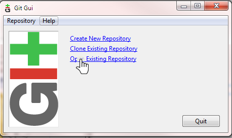
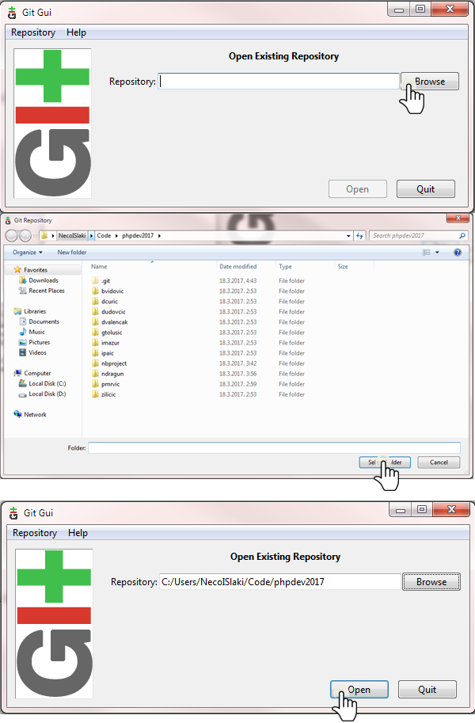
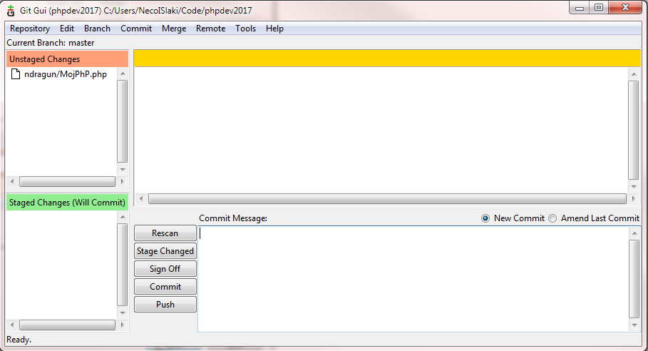
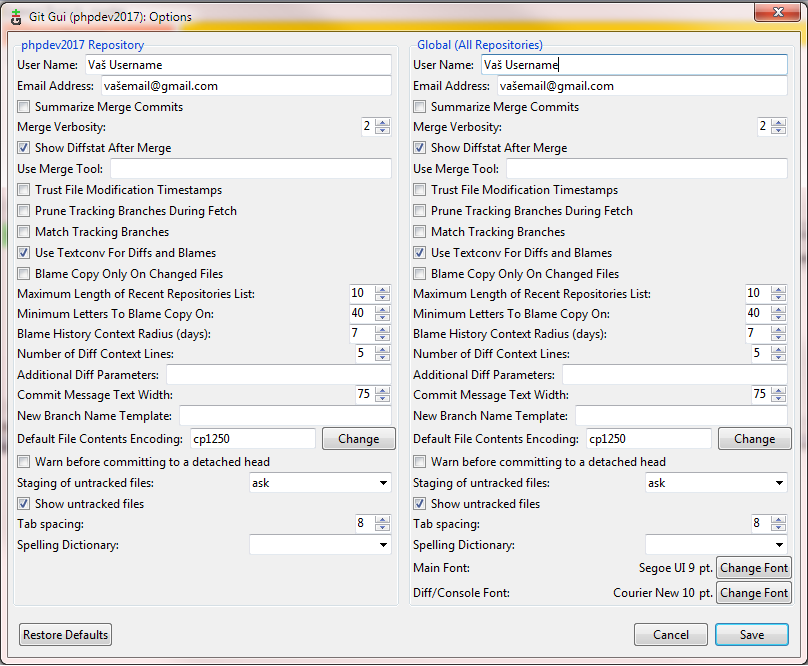
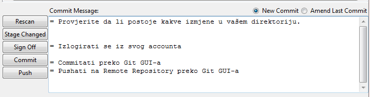

    <section id="table-lectures">
        <div class="container">
            <div class="row">
                <div class="col-lg-12 col-md-12 col-sm-12 col-xs-12">
                   <div class="predavanje-list">
                        <h1>PREDAVANJE BROJ 3</h1>
                        <br>
                        Git GUI
                        <ul>
                            <li>1. Instalirati potrebne porgrame ostalim kolegama te konfigurirati sve postavke koje su potrebne za stabilan rad.</li>
                            <li>2. Upoznavanje sa Git GUI</li>
                            <li>2.1. Nakon što otvorite vaš Git GUI kliknite na "Open Existing Repository" zbog toga što već imamo naš kreiran repository na local PC-u.</li>
                            <li></li>
                            <li>2.2. Kada stisnete "Open Existing Repository" pronađite vašu lociranu repository datoteku koja se nalazi u folderu Code\phpdev2017 koje smo kreirali na prvome predavanju.</li>
                            <li>Ukoliko nemate napravljenu datoteku pogledajte naše prvo predavanje: <a onclick="new Ajax.Updater('table-lectures','predavanje-1.php',{method: 'get',asynchronous:true,evalScripts:true}); esperar('');" href="#table-lectures">Klinki ovdje!</a></li>
                            <li></li>
                            <li>2.3. Ukoliko ste dodali postojeći repository na pravi način otvorit će vam se novi prozor kao na slici ispod.</li>
                            <li></li>
                            <li>2.4. Ukoliko imate isti prozor. Kliknite na (Edit > Options...) te provjerite da li su vaši User Name i Email upisani. Ukoliko nisu dodajte svoje podatke.</li>
                            <li></li>
                            <li>2.5. Objašnjenje komandi koje smo koristili na trećem predavanju.</li>
                            <li></li>
                            <li><strong>Zadatak za 21.03.</strong></li>
                            <li>1. Napraviti web stranicu</li>
                            <li>2. Napraviti tablicu</li>
                            <li>3. Promjeniti nekoliko stilova</li>
                            <li>4. Dodati nekoliko listi</li>
                            <li>5. Dodati vanjsku *.css stylesheet datoteku</li>
                            <li>6. Dodati nekoliko slika (slike ne uploadati već koristiti vanjski izvor)</li>
                            <li>7. Često koristiti git commit</li>
                            <li>8. Pushati na SVOJ remote git account</li>
                            <li>9. Poslati git pull request na glavni upstream git account</li>
                            <li>NAPOMENA: Većinu navedenih zadataka možete pronaći na <a href="https://www.w3schools.com/">W3SCHOOLS LINK</a></li>
                            <li>Kraj trećeg predavanja!</li>
                        </ul>
                   </div>
                </div> 
            </div>
        </div>
    </section>